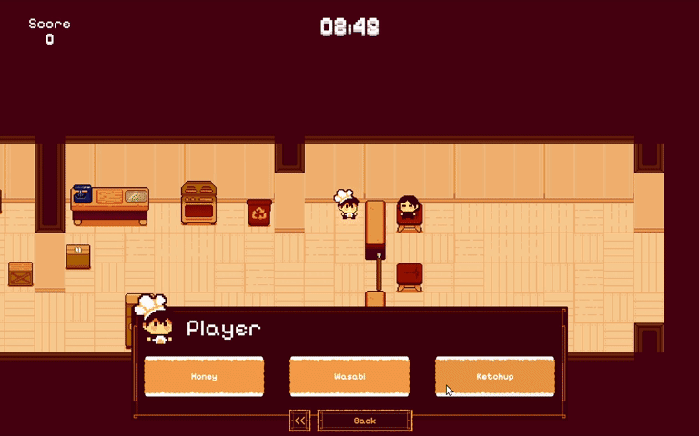
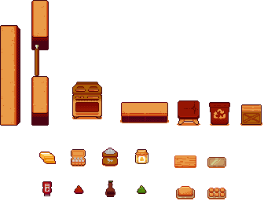
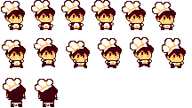
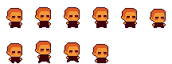
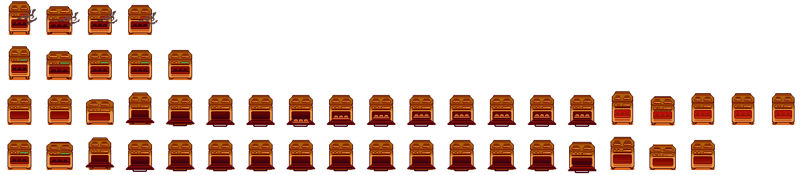
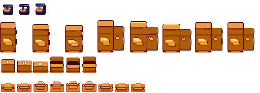

A Question of Taste
August 2025About Game
A Question of Taste is a point-and-click baking game about improvising. The bakery is out of the usual ingredients, so the player asks each customer three questions and gambles on substitutes like honey, ketchup, or wasabi.
➤ Entry for Brackeys Game Jam. Made in 7 days for the theme "Risk It For the Biscuit."
➤ Role: Lead Artist, Environment Art, Character Art
Lead Artist
I created all of the game's visual assets in Aseprite.
- Designed the bakery tileset and furniture: counters, fridge, storage boxes, mixing table, and oven.
- Drew the full baking sequence as separate states: mixing, rolling, cutting, dough on the tray, and the oven cooking, done, and burning.
- Drew every ingredient and cookie result, from a plain cookie to wasabi-honey and a burnt batch.
- Animated the baker (idle, walk, work) and the customers (idle, walk).
- Made the title screen, menu art, and rating stars.

Art Style
The game uses a top-down view on a 32 × 32 grid with a minimal palette. A small set of colors kept the kitchen readable at a glance, so the strange ingredients and cookie results stand out against it.




